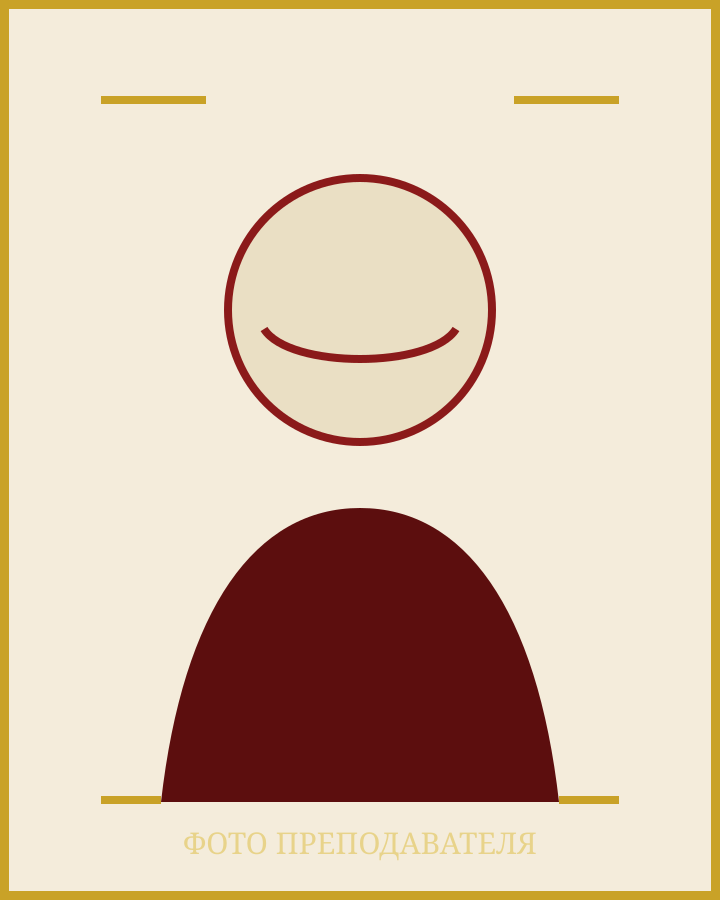

Автор учебного проекта
Разработка тренажёра, справочника и цифрового кабинета для системной подготовки к устной части.

Автор проекта и преподаватель
Преподаватель китайского языка и автор тренажёра устной части ЕГЭ.
Я создаю пространство, в котором экзаменационный формат становится понятным, а регулярная практика — спокойной и измеримой.
Страница заполняется: фотография, биография и подтверждённые результаты будут добавлены позже.Опыт и результаты
Разработка тренажёра, справочника и цифрового кабинета для системной подготовки к устной части.
Сбор моделей вопросов, речевых клише, примеров ответов и критериев самопроверки.
Здесь будут размещены подтверждённые результаты, отзывы и примеры учебного прогресса.
Место для сведений об образовании, квалификации и профессиональных достижениях.
Подход к занятиям
Понятный маршрут. Сначала разбираем критерии и каркас ответа, затем доводим его до естественной речи.
Регулярная практика. Короткие тренировки помогают видеть прогресс и меньше волноваться на экзамене.
Осмысленная обратная связь. Оценка показывает не только ошибку, но и следующий конкретный шаг.
Связаться